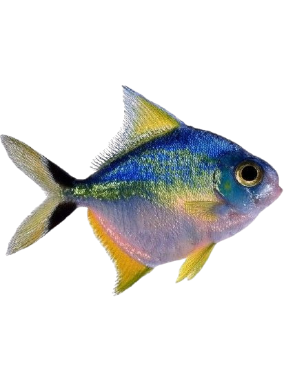
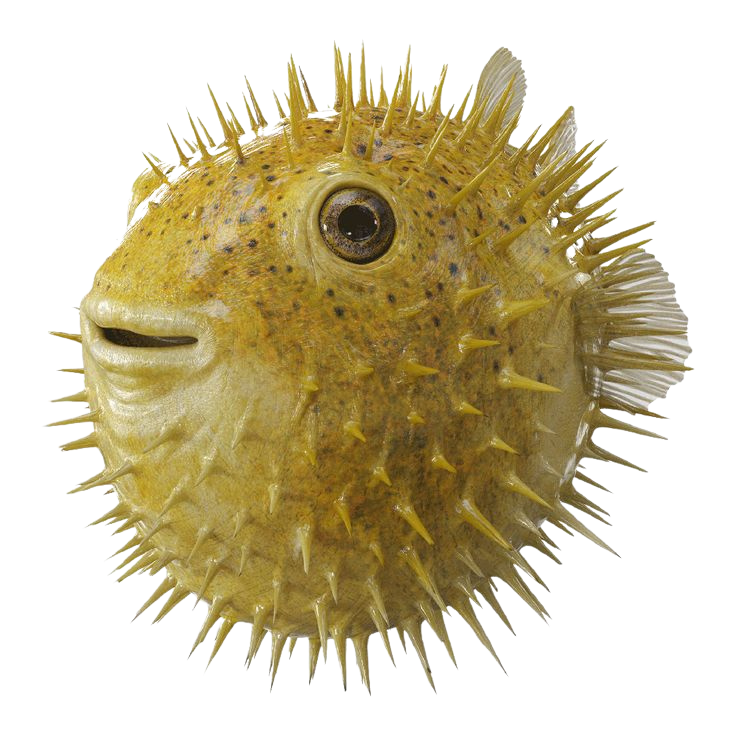
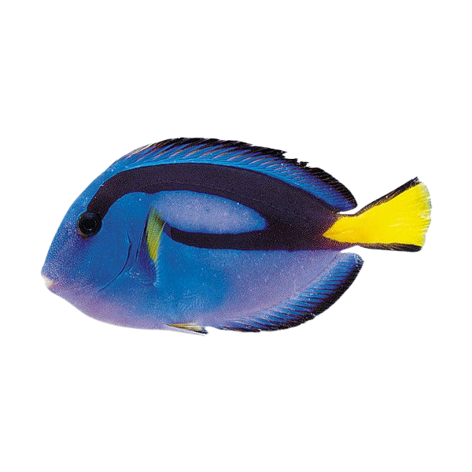
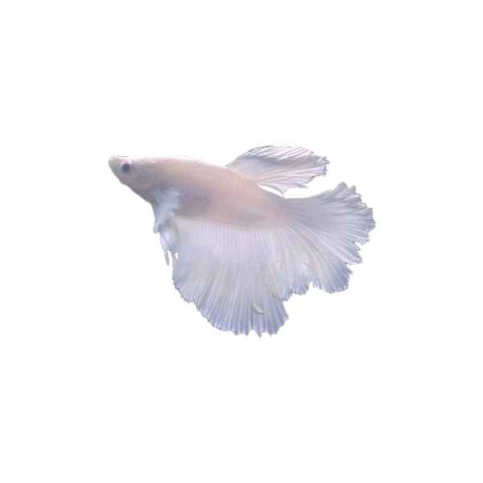
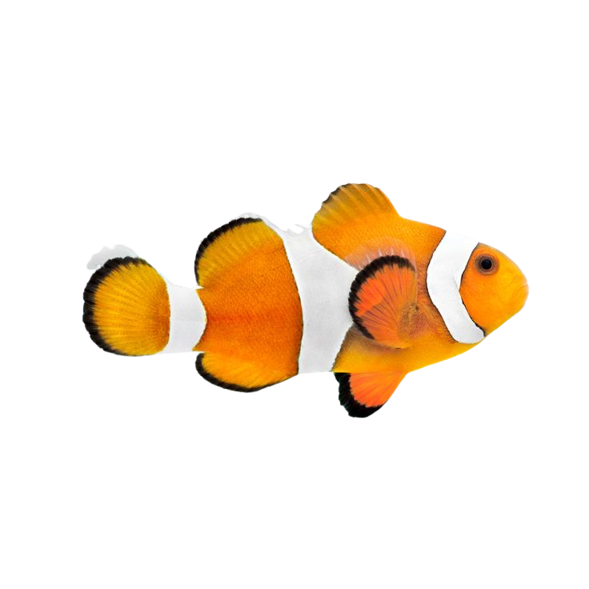

Silver Moony
Also known as a Mono Angelfish (Monodactylus argenteus).
Habitat: Coastal waters and estuaries of the Indian and Pacific Oceans.
Behavior: Active shoaling fish that need large aquariums (125 gallons).
Diet: Omnivorous and easy to feed.

Long-Spine Porcupinefish
Scientific name: Diodon holocanthus. Also called the spiny balloonfish.
Habitat: Tropical oceans near coral reefs, seagrass beds, and sandy seabeds.
Behavior: Inflates into a spiny ball to scare predators. Contains tetrodotoxin.
Diet: Carnivorous — eats copepods, insects, algae, larvae and marine invertebrates.

Dory
Scientific name: Pomacentrus guttatus. Also called the regal blue tang.
Habitat: Found in the Indo-Pacific region. They inhabit coral reefs and seagrass beds at depths of 6 to 131 feet (2 to 40 meters).
Behavior: Blue tangs can be found living singly, in pairs, or in small groups. They form groups of over 100 individuals to forage for algae. They possess a sharp, venomous, scalpel-like spine at the base of their tail fin, which is used for self-defense against predators.
Diet: Carnivorous — eats copepods, insects, algae, larvae and marine invertebrates.

Angelfish
Scientific name: White Platinum Betta fish, also known as a Siamese Fighting Fish
Habitat: Native to Southeast Asia. live in shallow, slow-moving freshwater environments such as rice paddies, marshes, ponds, and floodplains.
Behavior: Known for their territorial and aggressive nature. They are intelligent fish and can interact with their environment and owners.
Diet: Carnivores — Eats insects, insect larvae, small crustaceans, and other invertebrates found in the water.

Clownfish
Scientific name: Premnas biaculeatus. Also called the clown anemonefish.
Habitat: Warm waters of the Red Sea and Pacific Oceans. Sheltered coral reefs and lagoons. Typically reside within specific species of sea anemones.
Behavior: Clownfish form a symbiotic relationship with sea anemones, which provide them with protection from predators. Territorial, especially as adults. Exhibits sequential hermaphroditism; all are born male, and the largest, most dominant fish in a group becomes the female.
Diet: Omnivorous — Consists of algae, zooplankton, copepods, Mysis shrimp, and small crustaceans. They also eat food scraps left by their host anemone.